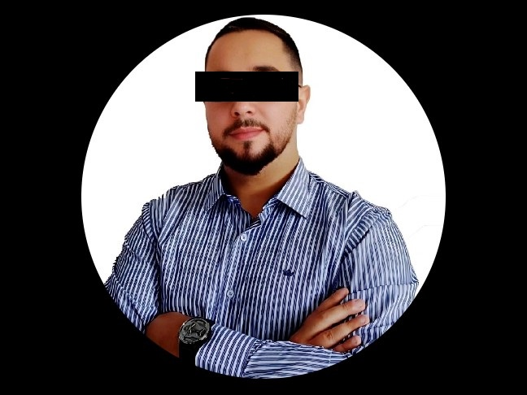

Campeão do Torneio 2024/1
postado 27 Abril 2024
Jhonatan sempre teve um sonho: ser campeão no eFootball. No entanto, cada derrota parecia um obstáculo intransponível. Ele treinava incansavelmente, estudava estratégias, mas a vitória teimava em escapar-lhe. Depois de várias tentativas frustradas, Jhonatan decidiu não desistir. Com determinação redobrada, ele mergulhou nos treinos, aperfeiçoou suas habilidades e fortaleceu sua mentalidade. E finalmente, em um torneio emocionante, sua persistência valeu a pena. Jhonatan ergueu o troféu de campeão, provando que, com esforço e dedicação, os sonhos podem se tornar realidade.
Uma Historia de "Raiovac"
postado 26 Abril 2024 Era uma vez um garoto apaixonado por futebol e videogames chamado Raiovac. Raiovac adorava se reunir com seus amigos para jogar eFootball, um jogo de futebol virtual onde eles competiam em torneios emocionantes. No entanto, havia um detalhe curioso sobre Raiovac: apesar de sua paixão e dedicação, ele nunca conseguia vencer um torneio. Raiovac treinava incansavelmente, estudava as estratégias dos melhores jogadores e sempre se esforçava ao máximo durante as partidas. Mas, por mais que se esforçasse, a vitória parecia sempre escapar por entre seus dedos. Ele era conhecido entre seus amigos como o "Pipoca", pois frequentemente caia nas quartas.
Conheça o Favorito Para a 1ª Edição da Copa
postado 24 Abril 2024Vilmar Pavanello Júnior era um garoto fascinado pelo mundo dos games, especialmente pelo eFootball, o popular jogo de futebol virtual. Desde pequeno, passava horas jogando e estudando as técnicas dos melhores jogadores profissionais. Seu maior sonho era se tornar um campeão de eFootball e ganhar o prestigiado torneio nacional.